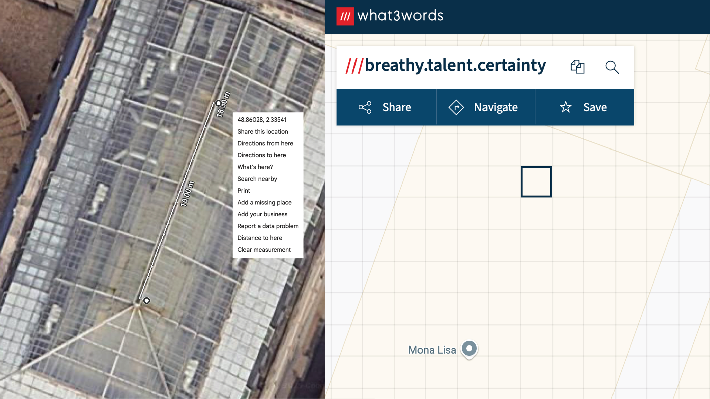

Secret Location
BACK
Puzzle Author: me :D
ANSWER:
breathy
talent
certainty
This excerpt is from The Da Vinci Code, and the full text reads:
"Langdon, now having made it clear to Sophie that he had no intention of leaving, moved with her across the Salle des Etats. The Mona Lisa was still twenty yards ahead when Sophie turned on the black light, and the bluish crescent of pen light fanned out on the floor in front of them. She swung the beam back and forth across the floor like a minesweeper, searching for any hint of luminescent ink."
This tells us exactly where we are! The Salle des Etats is the hall in the Louvre where the Mona Lisa is, and we specifically are twenty yards away from it!
what3words is a specific geolocation service that assigns unique three-word identifiers to every 9 m² square on the map. Plugging in the coordinates from Google Maps (using the Measure Distance tool!) gives us our answer!
